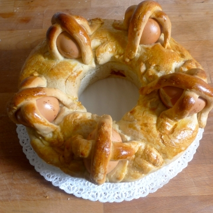
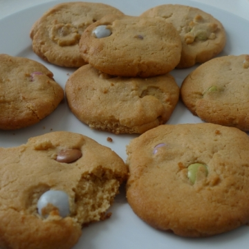
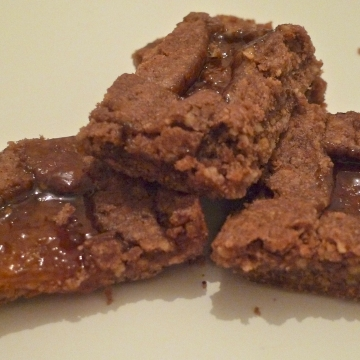
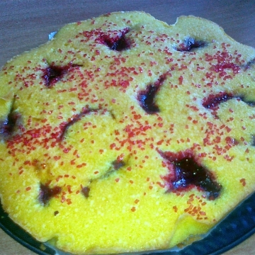
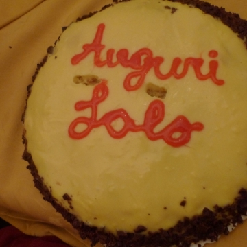
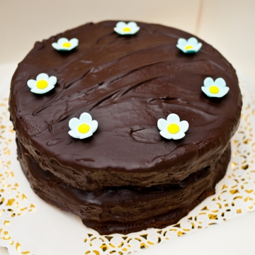

cucino.net
Nina condivide le sue ricette su cucino.net.
Registrati
per pubblicare le tue. È gratis!
Nina
Torta al cioccolato con crema di...
02 Giu 2012

Casatiello
09 Apr 2012

Biscotti al burro di arachidi
22 Gen 2012

Linzer Squares
08 Gen 2012
Zuccotto con crema e cioccolato
17 Mag 2011
Cheesecake ai frutti di bosco
25 Feb 2011
Tarte tatin di mele
30 Gen 2011
Scorzette di arancia candite al...
21 Gen 2011
Carrot cake
24 Dic 2010
Brownies
13 Dic 2010
Biscotti tipo canestrelli
07 Dic 2010

Torta semplice con marmellata
03 Nov 2010

zuppa inglese
09 Ott 2010
torta al cioccolato senza farina
20 Giu 2010
scones
02 Giu 2010

CHOCOLATE FUDGE CAKE
02 Giu 2010